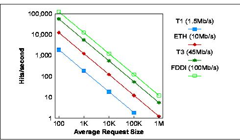

| Guideline: Web Server Sizing |
 |
|
1 StepsThe following sections address the considerations when sizing a box for a Web Server.
1.1 Factors to ConsiderAs a starting point the practitioner should ask the client the following questions:
Internet Sizing a Web server for the Internet can be a very difficult task. The Internet includes millions of interconnected individuals who are navigating from one Web server to the next in search of information that has value to them. Sometimes it is very hard to estimate how popular a site may become. Usually, for initial implementation the Web server machine is chosen based on certain maximum accepted connections at an acceptable response time. Later, based on the average statistical log, the system can be expanded according to the growing usage. Therefore, if the growth factor is going to be considered, then upgrade ability and scalability of the Web server machine should be considered. Intranet Intranets are private nets that use the same standards and protocols as the public Internet. Intranets are rapidly displacing internal Web sites as the new network-centric corporate computing platform. An Intranet Web site dissolves all departmental, geographic, and technical boundaries by creating a universal way to connect people to people and people to information. Sizing a Web server for an Intranet is considerably easier than sizing one for the Internet. The total number of potential users can be determined more accurately by using the total number of employees in the relevant department or the entire company. Bandwidth In working with a customer to size the Web solution, it is important to understand the implications of the speed of the networking connection to the Web server. More often than not, many potential Web content providers are very focused on the vague 'hits per day' quantity. The level of traffic that a particular Web server can support will be dependent on the server type, the content accessed on the server and the speed of the connection of the server to the Intra/Internet environment.
An Internet service provider will deliver a connection of defined speed, three of these most common speeds are: ISDN
(128kb/s), T1 (1.544Mb/s), and T3 (45Mb/s). For an Intranet environment, common LAN speeds are 10Mb/s (over Ethernet)
and 100Mb/s (over fast Ethernet or FDDI). Content Type The physical size of the Web content is important in looking at the resources required for a server, indicating the necessary data storage requirements. Additionally, when the content on the Web server is dynamically generated, substantial processing resources may be required. Dynamic content on a Web site can be generated in many ways, from a simple counter that displays the number of hits that a page has received, to a system that uses analysis of user clicks to tailor the information (and advertisements in some cases) that the user sees at the site. To gain some insight into the impact of simple content generation on performance, we will discuss results from WebStone-1.1 dynamic workload models. Number of clients The number of simultaneous users of a site is very challenging to characterize. Unlike other types of client/server architectures, the weight of an individual client on the Web server is quite small and short-lived. Connections to a Web server are traditionally stateless sessions that begin with an open from the client, a request for data, the server reply with data, and the session close. Depending on the speed of the network connection, the size of the data requested and the server load, this session can last from tenths to tens of seconds. 1.2 General Considerations
We strongly recommend creating a cluster of machines. Large web sites workload patterns are characterized by bursts of
activity. Such ‘business’ means that planning for average volumes is ineffective. 1.3 Sizing the Web ServerStep 1: Estimate The Workload After taking into account all of the above considerations and asking the appropriate questions, you may begin to estimate the workload as below. In order to complete the following sizing activity, you will need to know the following.
Sizing Processor Once you have determined all of the above variables you need to calculate the Adjusted Hit Rate (AHR) with the following formula. AHR = HR * (1 – DR) + HR * DR * CF HR = the number of hits DR = the ratio of dynamically generated pages. (Example: 60% = 0.6) CF = the complexity factor of dynamically generated pages (see above descriptions)
With most servers you can select the appropriate model by using the AHR. However, you should not select one large model that can support your AHR, as you need to prepare for unpredictable growth as discussed in the “General Considerations” section. Sizing Memory First there are base memory requirements for a web server simply based on the kernel and library memory requirements. Research shows the following are reasonable estimates of the base memory requirements. The following formula can be used to compute suggested memory for the WebServer. Memory = 180 + (max_child * 1.0MB) + application + OS + file_cache Max_child = the number of maximum child processes Application = the amount of memory which your applications need OS = the amount of memory required by the operating system File_cache = the amount of memory for the file cache. At least 32 MB is recommended. Sizing the Disk You need to have enough drive space for your OS, document tree, and log files. In most cases 2GB total is sufficient. Sizing Bandwidth As discussed in he above section, bandwidth plays a major role in the performance of the web server. The following chart shows the relationship between the speed of the network, the average request size and the maximum theoretical 'hits per second'. If you have the opportunity to make bandwidth suggestions, use the following chart as a guide.  1.4 Additional ToolsHTTP Server on AS/400 Tool If sizing an AS/400, IBM has provided an invaluable tool to aid you in this process. The IBM Workload Estimator is an easy to use sizing tool that can be run on-line or be downloaded to your PC for mobile use. It will size a machine for several popular workloads that as AS/400 would be expected to support including the IBM HTTP server. IIS on Netfinity / x series Tool Using this site will provide you with a best estimate of the xSeries or Netfinity system required to run either Microsoft Internet Information Server 4.0 or Microsoft Internet Information Services 5.0. IIS or Apache on Compaq Tool If using a Compaq machine, they offer sizing tools as well. iPlanet Web Server If the client plans to use iPlanet as the web server, Netscape has created a great informational site worth checking out. The site offers tuning, sizing, and scaling instruction tailored specifically to the iPlanet Web Server. Microsoft IIS If using Microsoft Internet Information Server, the following site offers more detail specific to IIS. Closing Considerations Remember that these formulas provide only an estimate. The practitioner who chooses to use these techniques does so at his or her own risk. The above formulas are recommendations concluded from IBM test results. |
| © Copyright IBM Corp. 1987, 2012 All Rights Reserved Property of IBM These materials are intended only for use as part of an IBM engagement |